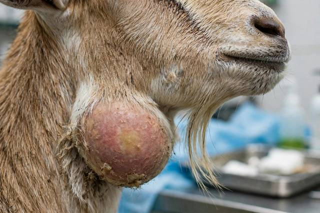

Caseous lymphadenitis (CL) is a chronic bacterial disease of goats and sheep that causes abscesses in the lymph nodes. It is difficult to cure, spreads easily within a flock, and causes steady losses through poor condition and reduced milk.
In Pakistan, CL is known as گلٹیوں کی بیماری and is common in goat flocks. It occurs worldwide and is one of the most persistent flock-health problems, because the bacteria survive for months in the environment.
On this page: the cause, animals affected, clinical signs, diagnosis, treatment principles and prevention.
Cause
CL is caused by the bacterium Corynebacterium pseudotuberculosis. It enters through small wounds in the skin — often during shearing, dipping or fighting — and travels to the nearest lymph node, where it forms an abscess. When an abscess bursts, the pus contaminates the surroundings and infects other animals.
Animals Affected
Goats and sheep are the main hosts, and the disease is most common in adult animals. Horses and cattle can also be infected. People are very rarely affected.
Clinical Signs
1
Firm swellings (abscesses) at the lymph nodes(Under the jaw, in front of the shoulder and near the udder)
2
Abscesses enlarge, then burst and drain thick, greenish-white, cheese-like pus(Bursting abscesses drain cheese-like pus)
3
Repeated abscesses at the same sites(Abscesses keep coming back)
4
Abscesses in the lungs or liver, causing chronic weight loss and poor condition(Internal form: hidden abscesses, wasting)
5
Reduced milk(Drop in milk production)

Abscesses at the lymph nodesBursting abscessesRepeated abscessesWeight loss and poor conditionReduced milk
Diagnosis
The typical lymph-node abscesses raise suspicion. The diagnosis is confirmed by culturing the pus or by blood tests (ELISA). CL must be distinguished from other abscesses, tuberculosis and actinomycosis.
Treatment
CL is difficult to treat because antibiotics penetrate abscesses poorly. Abscesses may be lanced and drained by a veterinarian under strict hygiene, but the disease often returns. In many control programmes, affected animals are culled. Never lance an abscess without veterinary guidance — the pus is highly infectious.
Recommended Medicines
1
Supportive care – Lancing and drainage of abscesses (by a veterinarian)(Abscesses drained by a veterinarian under strict hygiene)As prescribed by a veterinarian
2
Antibiotic – Antibiotics (vet-selected)(Penetrate abscesses poorly — only as the veterinarian advises)As prescribed by a veterinarian
3
NSAID – Meloxicam(For pain after lancing)0.5–1 mg/kg IV/SC once (goats)
⚠ Important Tips:
Never lance an abscess yourself — the pus is highly infectious.
Antibiotics alone cannot cure CL — they penetrate abscesses poorly.
Use medicines only under veterinary advice.
Cull or permanently isolate affected animals to protect the flock.
Injection — vet-administered onlyMedicines — only as prescribed by a veterinarian
Prevention
Cull or permanently isolate affected animals
Quarantine and test new animals before adding them to the flock
Disinfect shearing and handling equipment between animals
Keep yards and housing clean
Vaccinate where a CL vaccine is available, as advised by a veterinarian
Do not buy animals with visible swellings
Key Takeaway
CL is a disease of management: culling affected animals, strict quarantine and clean shearing are the only reliable ways to control it.
Keep herd health records, consult a qualified veterinarian and follow the animal-health authority's current guidance for your region.
Frequently Asked Questions
What are the symptoms of caseous lymphadenitis in goats?
Firm swellings (abscesses) at the lymph nodes under the jaw, in front of the shoulder and near the udder. Abscesses enlarge, then burst and drain thick, greenish-white, cheese-like pus. Repeated abscesses often appear at the same sites.
What causes caseous lymphadenitis in goats?
CL is caused by the bacterium Corynebacterium pseudotuberculosis. It enters through small wounds in the skin, often during shearing, dipping or fighting, and travels to the nearest lymph node, where it forms an abscess.
How is caseous lymphadenitis in goats diagnosed?
The typical lymph-node abscesses raise suspicion. The diagnosis is confirmed by culturing the pus or by blood tests (ELISA).
How is caseous lymphadenitis in goats treated?
CL is difficult to treat because antibiotics penetrate abscesses poorly. Abscesses may be lanced and drained by a veterinarian under strict hygiene, but the disease often returns. Never lance an abscess without veterinary guidance, as the pus is highly infectious.
How can caseous lymphadenitis in goats be prevented?
Cull or permanently isolate affected animals, quarantine and test new animals, and disinfect shearing and handling equipment between animals. Do not buy animals with visible swellings, and vaccinate where a CL vaccine is available.
Why does my goat have lumps under jaw?
Firm swellings at the lymph nodes under the jaw, in front of the shoulder or near the udder are typical of caseous lymphadenitis. Abscesses enlarge, then burst and drain thick, cheese-like pus.
How to treat abscess in goat?
CL abscesses may be lanced and drained by a veterinarian under strict hygiene, but the disease often returns because antibiotics penetrate abscesses poorly. Never lance an abscess without veterinary guidance, as the pus is highly infectious.
بکری کے جبڑے کے نیچے گلٹی کیوں بنتی ہے؟
گلٹیوں کی بیماری میں لمف نوڈز پر سخت پھوڑے بنتے ہیں جو پھٹ کر گاڑھا پیپ خارج کرتے ہیں۔ یہ بیماری آسانی سے پھیلتی ہے اور علاج مشکل ہے۔ متاثرہ جانور کو الگ کریں اور پھوڑا ڈاکٹر کی ہدایت کے بغیر نہ کھولیں۔